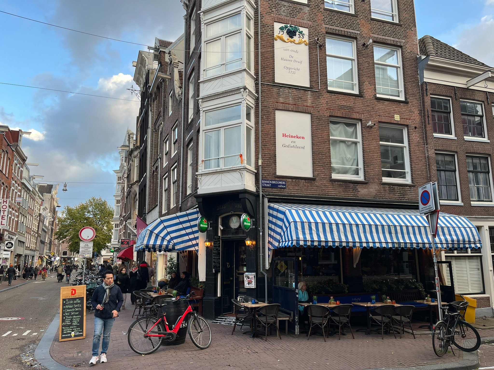

Noord-HollandAmsterdam

De Blauwe Druif
- Sinds
- 1790
- Straat
- Haarlemmerstraat 91-H
Café de Blauwe Druif is een van de oudste bruine kroegen van Amsterdam (sinds 1790). Het is een pretentieloos baken van gezelligheid in de Haarlemmerstraat waar de tijd heeft stilgestaan.